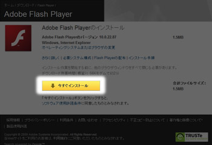
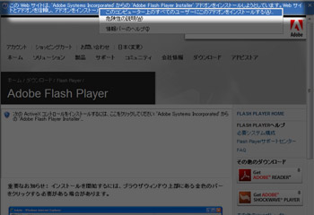
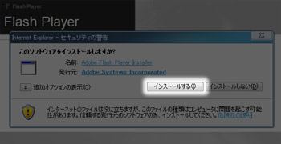
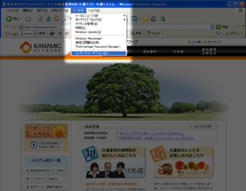
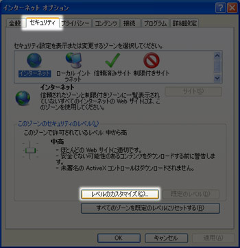
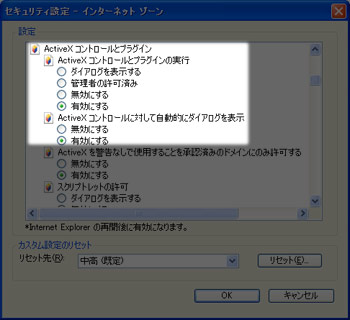
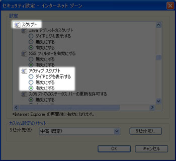

Flash Playerについて
Flash Player（フラッシュプレーヤー）とは、ブラウザ上でFlashムービーと呼ばれるムービーを再生する装置の一種です。ブラウザにあらかじめ入っていない場合、手動で入れる必要があります。
Flash Playerにはバージョンがあり、古いバージョンのFlash Playerでは再生出来ない場合があります。
カナミックネットワークの介護システムはログインをする際にこのFlash Playerのバージョン7以上が必要になりますのでお使いのパソコンに入っている必要があります。
Flash Playerのダウンロードページを表示します。下のアドレスをクリックするとダウンロードページに移動します。
http://get.adobe.com/jp/flashplayer/
今すぐインストールのボタンを押してください。

{kind=link}
ブラウザの上部に黄色い帯（Flash Playerをインストールしようとしていることを促すメッセージ）が表示された場合は、この帯をクリックして『このコンピューター上のすべてのユーザーにこのアドオンをインストールする』をクリックしてください。

インストールの画面が開きますので、『インストールする』のボタンをクリックしてください。
上記設定でFlashムービーが表示されない場合は次の手順で設定を行ってください。
ActiveXコントロールの設定
上記手順でFlash PlayerをインストールしてもFlashムービーが再生されない場合、インターネットオプションの設定を変更する必要があります。
{kind=link}
Internet Exploer6の画面上部にあるメニューから、
[ツール] → [インターネットオプション]
とたどってインターネットオプションの画面を開いてください。
Internet Explorer7/8の場合は画面右端にあります。
[画面1、画面2]
{kind=link}
{kind=link}

インターネットオプションの画面のセキュリティタブをクリックして下部にある『レベルのカスタマイズ』ボタンを押して設定画面を開きます。

『ActiveXコントロールとプラグイン』の項目の『AcriveXコントロールとプラグインの実行』を『有効にする』に設定してください。
また、『ActiveXコントロールに対して自動的にダイアログを表示』も『有効にする』に設定してください。

『スクリプト』の項目で『アクティブスクリプト』を『有効にする』に設定してください。
OKボタンを押してセキュリティ設定の画面を閉じてください。以上でActiveXの設定は終わりです。